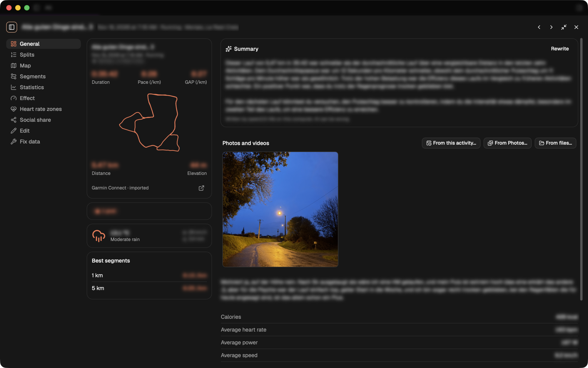
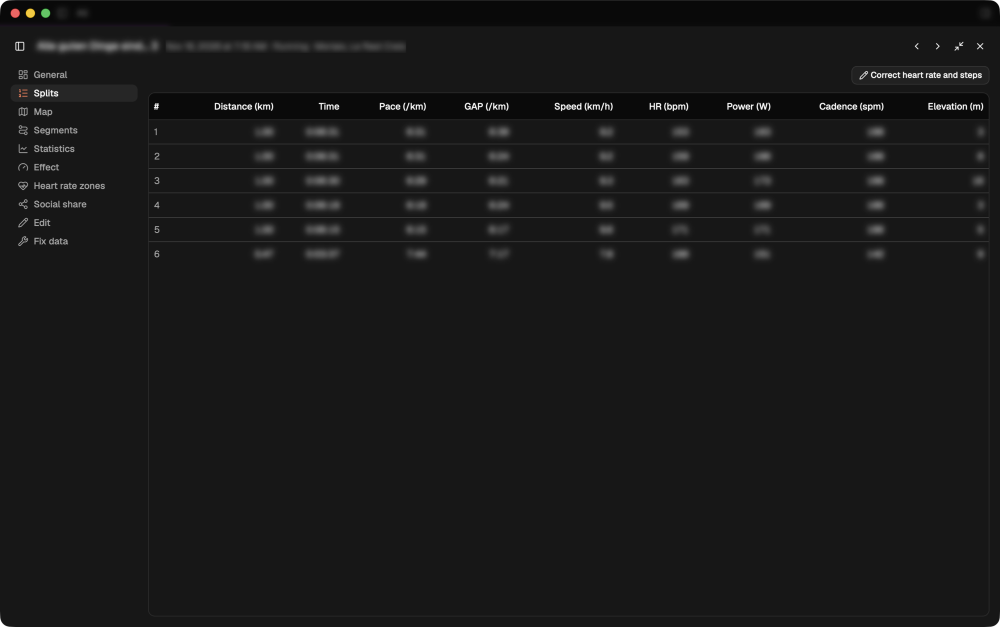
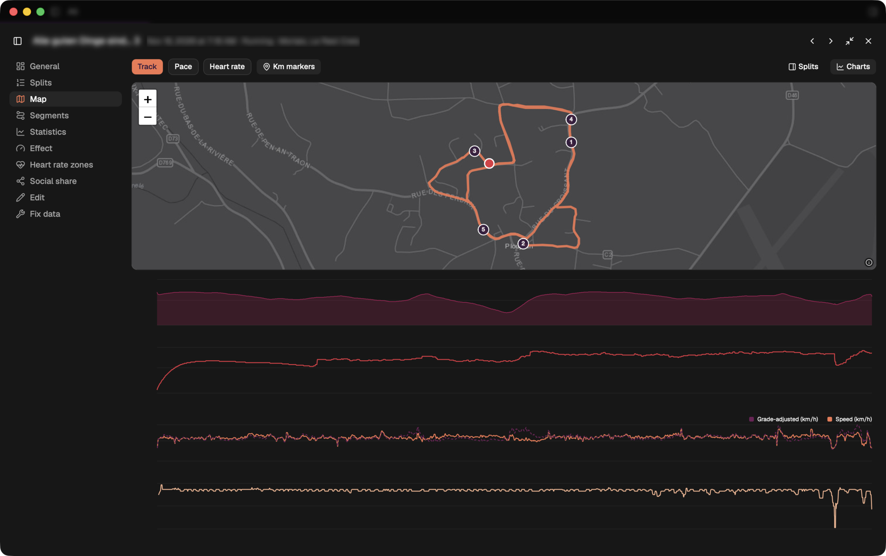
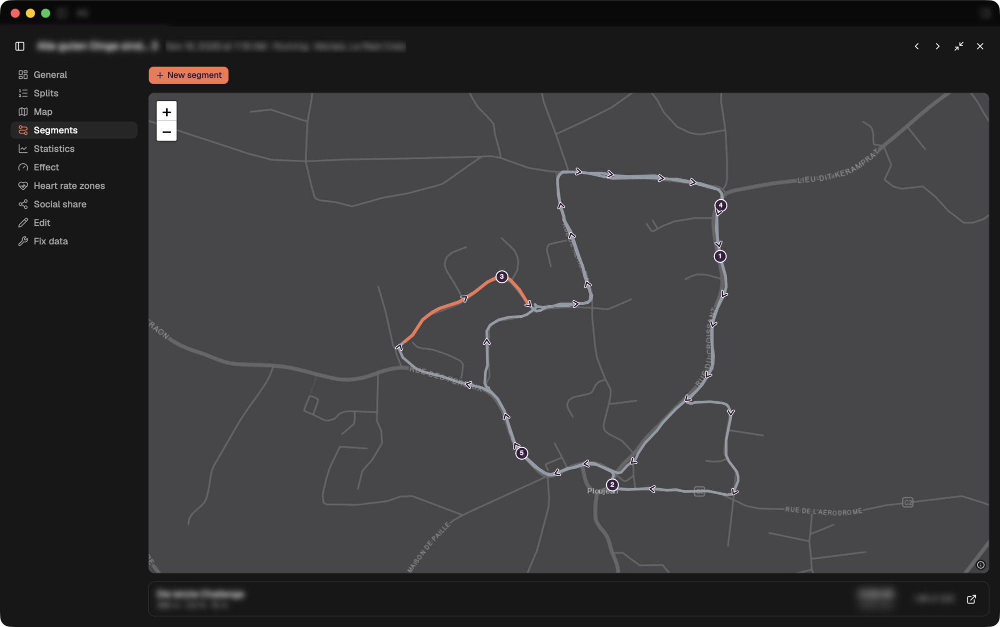
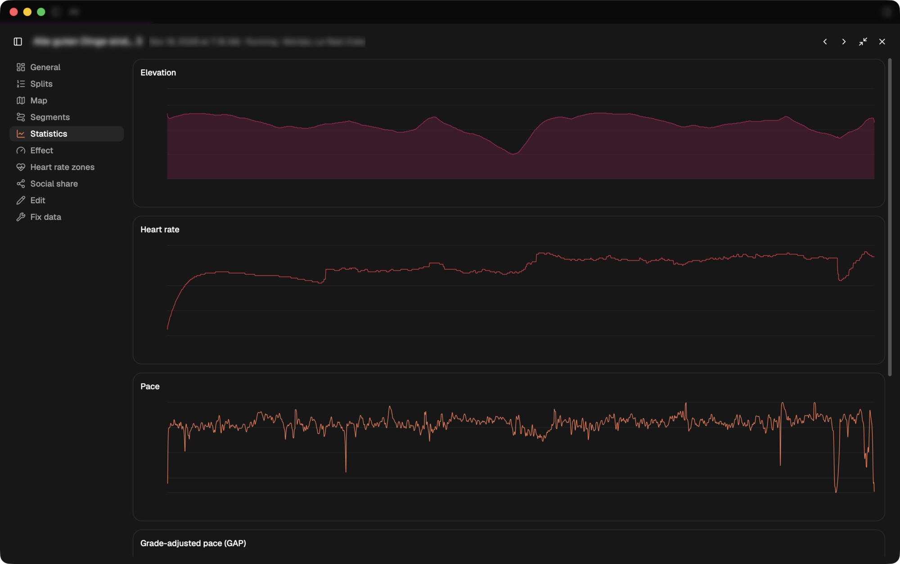
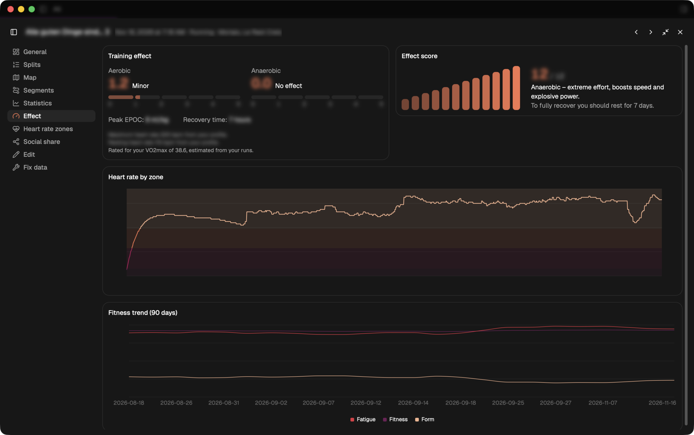
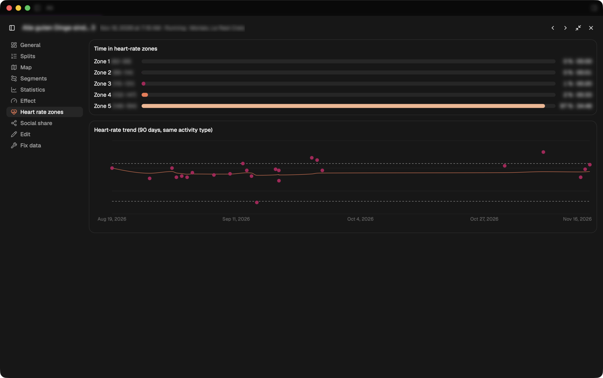
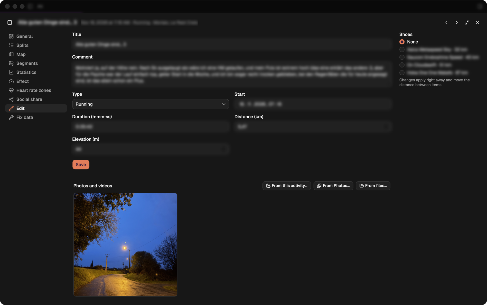
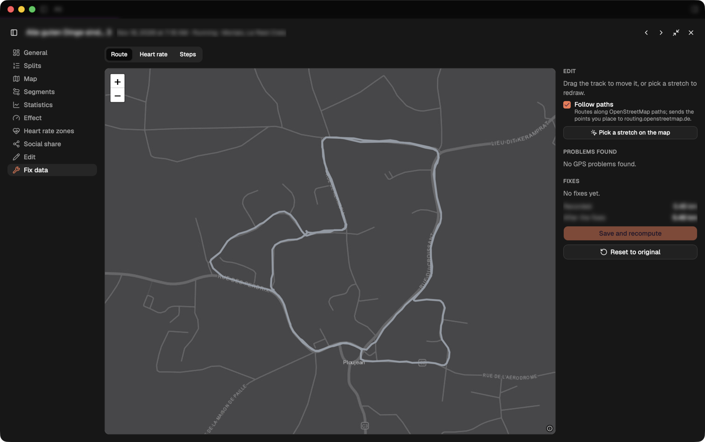
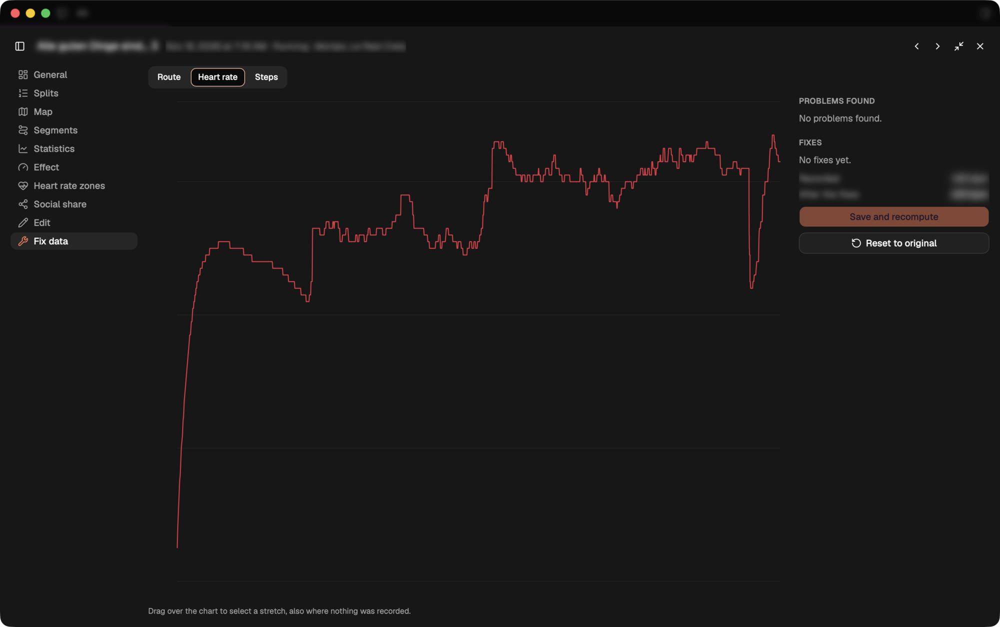

Detail Window
The detail window shows everything about one activity. Open it by double-clicking an activity in the list, with View details in the activity's ⋮ menu, with Open details in the activity panel, or by clicking an activity on the dashboard, in the gallery, on the goals or training pages or in a segment's ranking.
It opens on General. An activity you haven't reviewed yet (no edit, comment, photo or video) opens on Edit instead, so you can give it a title and a comment right away. The page you pick stays selected when you move to another activity.
The header shows the title, date and type, and the place the activity started (see place names), and these buttons:
- Toggle navigation shows or hides the page names on the left; hidden, only their icons remain. The choice is kept.
- Previous activity and Next activity move through the activities in the order of the list you opened the window from (only when you opened it from a list).
- Maximize fills the app window; Restore size makes it smaller again. The choice is kept.
- Close closes the window.
If a page has changes you haven't saved (the Edit page, split corrections or fixes on Fix data) and you leave it, move to another activity or close the window, the app asks Save your changes?: Save saves them and goes on, Discard drops them, Cancel stays.

General
On the left is the same panel as beside the activity list: duration, pace (for runs and walks also the grade-adjusted pace), the route, distance and elevation, the Garmin Connect link, goals, training session and trophies, the weather and the best segments. Which boxes it shows is set per sport in the settings under Activity panel.
On the right you'll find:
- Summary, a short text comparing the activity with similar and recent ones, written by a local AI model. It only shows when AI summaries are turned on in the settings under AI summary. Click Write summary (or Rewrite) to have it written; this takes a moment. The note below it names the model.
- Photos and videos of the activity (see Photos and videos below).
- Your comment.
- Further figures, where available: calories, average heart rate, average power, average speed, average pace, the grade-adjusted pace (GAP, not for rides), fastest and slowest pace, cadence and steps (not for rides), pause time, and the shoes or bike.
Photos and videos
Add photos and videos with the buttons above the gallery:
- From this activity… (macOS) opens Photos from this activity: the photos and videos in your Photos library taken during the activity (from 10 minutes before the start to 10 minutes after the end). Tick the ones you want, or use Select all, and click Add. Items already added are marked. The first time, the app asks for access to your Photos library (Allow access…); nothing in it is changed or uploaded. If access was denied, Open System Settings takes you to the place to allow it.
- From Photos… (macOS) opens the system photo picker, to pick any photo or video.
- From files… picks files from disk (PNG, JPG, HEIC, MP4, MOV, AVI). You can also drop files from Finder onto the gallery.
Photos from the Photos library are always copied. For files from disk the app asks whether to Copy into RunningMate (the file is safe in the app's media folder) or Link to originals (saves space, but breaks if the original is moved or deleted). Tick Remember my choice to stop being asked; you can change it in the settings under General (Adding photos and videos from files). Linked files show a small link symbol; a file that can no longer be found shows File missing. Copied photos are scaled down to the photo size set under Storage in the settings; linked files are never changed.
Click a photo or video to see it in full. Move with the arrows on screen or the arrow keys, or click a thumbnail in the strip below. Slideshow shows each photo for a few seconds and plays videos to their end; the space bar starts and stops it. To remove a file, hover over it and click ×: a copied file is deleted from the media folder, for a linked one only the link is removed.

Splits
This page lists the splits of the activity: one per kilometre, or per 5 kilometres for rides. For each split you'll see the distance, time, pace, GAP (the grade-adjusted pace, not for rides), speed, heart rate, power, cadence (not for rides) and elevation gain, where recorded.
Click Correct heart rate and steps (only Correct heart rate for rides) to type in the average heart rate or steps per minute a split should have. On Save and recompute, the recorded values of that split are shifted so its average matches, and the activity is recomputed: the charts, zones, training effect and the other splits follow. The change is written into the stored activity file, so it also holds when the activity is processed again. Reset to original on the Fix data page undoes it.

Map
The map shows the track of the activity, with a light or dark map following the app's appearance. A dot marks the start and another the finish.
The buttons above the map:
- Track, Pace and Heart rate colour the track: in one colour, or from slow to fast or low to high heart rate, with a scale beside the buttons. Pace and heart rate are only available when they were recorded.
- Km markers (5 km markers for rides) shows or hides numbered markers at each kilometre.
- Splits shows or hides a list of the splits beside the map, with time and speed; click one to put a position dot where it ends (the map moves there if needed, and the charts mark it).
- Charts shows elevation, heart rate, speed and, for runs with cadence data, steps per minute over the distance below the map (hidden at first). For runs and walks the speed chart has the grade-adjusted speed as a second, dashed line. Moving the mouse over them moves the position dot along the track.
The app remembers which of these you turned on.
Segments

Lists the segments this activity passes, each with its distance, grade and climb, the time, pace (speed for rides) and its place among all tries, e.g. "2 of 7". A gold, silver or bronze trophy marks the three fastest places. Click a segment to highlight it on the map, or click Open segment to see its full ranking, where this activity's passes are marked.
Arrows along the track show the direction you went, and the numbered markers the kilometres (5 km for rides), so you can tell whether a stretch went up or down. Click New segment to mark one: click on the track where it starts, then where it ends. Where the track passes the same spot more than once, the start is the first pass and the end the next pass after the start. Use the slider to fine-tune both ends, check distance, average grade, elevation gain and the elevation profile, give it a title and click Save segment. A segment must be at least 100 m long. Stop marking or Cancel leaves without saving. The app then looks for passes over the new segment in all your activities of the same sport, in the background.
Statistics

Charts over the distance of the activity: Elevation, Heart rate, Pace (faster at the top), for runs and walks Grade-adjusted pace (GAP) (the pace on the flat for the same effort, with the pace faint behind it, so you see where climbs and descents made you slower or faster) and, for runs, Steps per minute. A chart only shows when its values were recorded. Hover over a chart to read the value at a point. See Pace and Activity data for how the values are worked out.

Effect
- Training effect shows the aerobic and the anaerobic training effect of the activity, each from 0.0 to 5.0 on a scale of five steps with its meaning (from "No effect" to "Overreaching"), the peak EPOC in ml/kg and the recovery time. Below, it lists the maximum and resting heart rate and the VO2max it was rated with and where they come from, e.g. "estimated as 220 − age" when your profile has no maximum heart rate. Activities without heart rate have no training effect. See Trainings Effect for how it is calculated.
- Effect score, beside it, rates the activity from 1 to 12 on twelve rising bars, compared with your training of the same sport in the last 90 days, with its meaning (from "Recovery" to "Anaerobic") and the suggested rest. See the effect score.
- Heart rate by zone (runs and rides with heart-rate data) shows the heart rate over the time of the activity, the line coloured by your heart-rate zones over light bands for each zone. The zones are set in the user settings.
- Fitness trend (90 days) shows fitness, fatigue and form over the 90 days up to the activity. See Fitness.

Heart rate zones
Time in heart-rate zones shows, for each zone with its heart-rate range, the share and the time you spent in it during the activity. You set the zones in the user settings; without them this box asks you to. See Heart rate zones for how they work.
Heart-rate trend (90 days, same activity type) plots the average heart rate of each activity of the same type over the 90 days up to this one, with a trend line, and dashed lines at the upper bounds of zones 1, 3 and 5 (Min, Ideal, Max).
Social share
Builds an image of the activity for social media. Pick a size: presets for an Instagram post (1:1) or portrait (4:5), a story (9:16), an X post (16:9) and a Facebook post, or any size of your own. Then pick a background: a gradient, a single colour, one of the activity's photos (or any image file), a light or dark map, or transparent. Photos and the map can be darkened so the text stays readable. Choose which facts to show (title, date, distance, duration, pace or speed, elevation, heart rate, calories) and the colours and sizes of the route and the text.
Each fact is its own element: the route, the title, the date and every figure can be placed anywhere. Click an element to select it, Shift-click to add more; drag to move the selection, or nudge it with the arrow keys (Shift for bigger steps). On a map, the map moves with the route, so it stays on its streets. The bar above the preview lines up the selection: one element (or group) on the image's left edge, centre or right edge, top, middle or bottom; several on each other. Equal space spreads three or more evenly between the outer two, or one or two evenly across the image. Group keeps elements together: clicking one selects the whole group, and it moves, lines up and spreads as one. Turn on Grid to see a grid over the preview (not in the image): dragged elements put their nearest edge or centre on its lines; hold Option (⌥) while dragging to place them freely. Reset positions puts everything back.
Save image… writes a PNG; Share… opens the macOS share menu (Messages, Mail, AirDrop, Photos and any app that offers itself there). To post on Instagram, save the image and upload it from your phone or the website. The editor remembers your last settings for the next activity.
Edit

Change the Title, the Comment, the Type (e.g. Trail, Interval or Long Run for runs, Hiking for walks, Gravel Biking for rides), the Start time, the Duration (h:mm:ss), the Distance (km) and the Elevation (m), and click Save. The window then goes back to General. Changing distance, duration or elevation here doesn't change the recorded track, so the splits, charts and segment times stay as they were; to correct the track itself, use Fix data.
Beside the form, pick the Shoes (or Bike for rides) you used, or None. This applies right away and moves the distance from one item to the other. Retired items are only listed while they are assigned to this activity.
Below the form you can add and remove photos and videos, as on the General page; these changes apply right away.
To process an activity again from its file or to delete it, use Re-import from TCX or Delete… in the activity's ⋮ menu in the activity list.
Fix data
Corrects recording errors in the activity's track. Choose what to fix at the top: Route, Heart rate or Steps (not for rides). Fixes collect in the Fixes list, where you can remove them again; Recorded and After the fixes compare the distance (or the average heart rate or steps) before and after. Save and recompute writes the fixes into the stored activity file and recomputes the activity: distance, splits, charts, zones, training effect, segments and goals follow. The original file is kept, so Reset to original drops all fixes of route, heart rate and steps (and split corrections) and recomputes the activity from the file as it was imported.
Route

The map shows the track; Problems found lists GPS spike (positions far off the route, faster than the sport allows) and GPS dropout (stretches without a position, or a long jump in time and place), marked red on the map.
- Drag the track to move it: the stretch around the point you grab (about 250 m either side) follows.
- Click a problem, or Pick a stretch on the map and click where the stretch starts and where it ends. Then click the map to draw the route of that stretch; drag the points to move them, Undo point takes the last one back. The stretch's time span and the new length are shown. Use route adds it to the fixes, Cancel drops it.
With Follow paths turned on, the drawn route follows OpenStreetMap paths between your points instead of straight lines. This sends the points you place to routing.openstreetmap.de; turn it off to keep everything on your computer. If no path can be found, straight lines are used.
An activity recorded without GPS (No GPS) starts with drawing the whole route.
Heart rate and steps

A chart shows the recorded values (heart rate in bpm, or steps per minute) over the distance, with your changes on top. Problems found lists stretches that look wrong:
- No values recorded: nothing at the start or the end, for example a chest strap that only connected after the first kilometre.
- Dropout: values missing for 10 s or more in between (for steps only while you were moving, since steps stop when you stand still).
- Implausible values: values far off the level both before and after them, by more than 20 bpm or 25 steps per minute compared with the median of the 30 s on either side. A change of level, such as a climb, a walk break or slowing down, isn't one; fewer steps while you also got slower aren't either. In the first minute only values that are too high count, since starting low and warming up is normal, but a foot pod or strap reading far too high at the start is caught.
- Implausible start: a heart-rate strap reading high from the first seconds, then dropping suddenly and staying lower.
Click a problem or drag over the chart to select a stretch, also where nothing was recorded; you can fine-tune it in the From (km) and To (km) fields, and its average is shown. Then:
- Estimate from the pace works out the values from how fast you went, which suits a longer stretch, such as a strap that only connected after the first kilometre. How your heart rate (or step rate) follows your speed is learned from the rest of the activity: a straight line through the recorded values against your speed over the minute before each point, while moving. Over the stretch the heart rate climbs towards that level with a delay of about 45 s, as it does when you start running; at the very start of the activity it begins at a low value, between 55 % and 75 % of the level the recording settles at. Finally the estimate is bent so it meets the recorded values on both sides. It needs at least two minutes of recorded values elsewhere in the activity.
- Interpolate replaces the values with a straight line from the level before the stretch to the level after it, each the median of the 30 s beside the stretch, so a single stray value next to it doesn't set the level. A stretch at the start or end gets the level of its one side.
- Set sets them all to the value you type in,
- Shift moves them up or down by the value you type in.
To correct the average of whole splits instead, use Correct heart rate and steps on the Splits page.